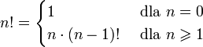

Poprzednie lekcje miały wprowadzić Cię w strukturę systemu, a także zapoznać z językiem wykorzystywanym w systemie. Mam nadzieję, że dokładnie zapoznałeś się z ww. elementami, gdyż w tym momencie przejdziemy do głównego tematu tego systemu, czyli do nauki rekurencji.
Definicja rekurencji brzmi następująco:
Rekurencja - sposób definiowania funkcji, polegający na umieszczeniu
w treści funkcji odwołań do samej siebie.
Silnią liczby naturalnej nazywamy iloczyn wszystkich liczb naturalnych nie większych niż n. Oznaczamy ją wykrzyknikiem, n! Np. 5!=1⋅2⋅3⋅4⋅5=120. Ponadto przyjmuje się że dla zera silnia wynosi jeden (0! = 1).
Funkcję silnia można zdefiniować na dwa sposoby:
| 1. | |
| 2. |  |
ffff
int silnia(n)
|
int silnia(n)
|
Przed rozpoczęciem zadania należy zapoznać się ze specyfikacją zadania, znajdującą się w zakładce pod tym samym tytułem.